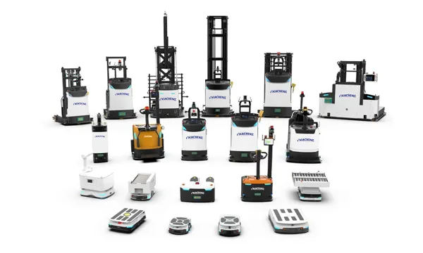

Back to Case Studies
示例自动化案例
这是一个用于生成静态案例页面的简短摘要。
CountrymalaysiaIndustryManufacturing / IndustrialFunctionWarehouse AutomationApplicationWarehouse & StorageTechnologyASRS, Stacker Crane, WMS

Project Overview
Project Overview
Describe the background, customer situation, and project goal.
Key Points
- Customer challenge
- Automation solution used
- Business value delivered
Implementation & Workflow
Describe the layout, workflow, equipment coordination, and implementation process.
Customer Value & Results
Describe improvements such as capacity, labor savings, accuracy, or ROI.
Conclusion
Summarize why this project is useful for similar customers and invite consultation.
Challenge
Customer needed higher storage density, lower labor dependency, and more accurate inventory control.
Solution
13ASRS designed an automated warehouse system with stacker cranes, conveyors, and WMS integration.
Workflow & Layout
Inbound pallets are scanned, conveyed to storage, retrieved by WMS orders, and dispatched through outbound lanes.


Equipment Used
- Stacker Crane
- Conveyor System
- WMS
Results & ROI
- Storage Capacity +300%
- Labor Cost -60%
- Inventory Accuracy 99.9%
Related Blog
Business Challenge
Discuss Your Project
Start with Your Business Challenge
Tell us about your warehouse, factory, or production requirements. We'll help you explore practical automation solutions and relevant project references.